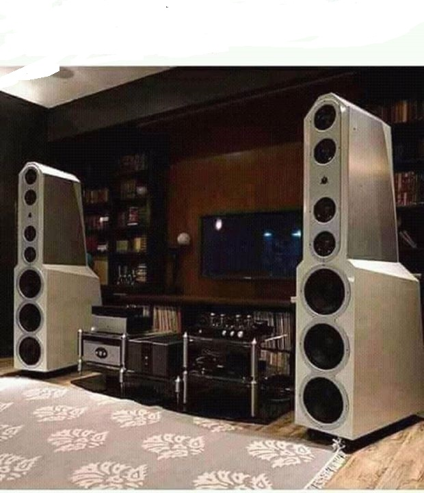

MUSIC
Music is a expressing yourself through
songs
,Songs are words said in a musical rhythm.
There are different types of music in both past,present and future
Classical music
Jazz music
Hiphop
Rap music
RnB
People around the world are getting famous just writing songs and dancing to them.Some of the songs they release are international and get payed for each international song played.
AYO and TEO
Artists are people who sing or rap muisic,some of the artists are known to be rich and famous because of the credit they get when they release songs.Some of the artists release albums which helps them get even more money than required some of the artists tha released albums and got money are listed below
Rae sremmurd
Kendrick lamar
and may others.
RAE SREMMURD
People use headphones to listen to music.headphones are portaqble machines used to listen to music,there can be through bluetooth and some are wirelessly connected.Others are done using cables aand aare connected to the phone in the headphone jack located on the top of a phone.People with sense use different types of gadgets to listen to their music
headphones
earphones
speakers
HEADPHONES
Dance is way of expressing emotion through music,dance is done in different ways,dance has many functions used to get money in ceremonies and some are posted in youtube to show fame.Some people love dancing so much that they have created new dance moves and post them to you tube and even putting them in music videos,this dance moves are so trendy that people who invent them are taking to talk shows like
ELLEN
Some of these dance moves are;
DAB
THE FOLKS
NAENAE
IN REVERSE
THE JUJU
THE DAB
The stereo is important if you want to listeen to music in your room,the stereo help a big group of people in one area to listen to the same piece of music at the same time.the stereo is also importat for djs who play at birthday parties,weddings and other functions.The stereo is seen as the diagram below
THE STEREO

MORE ABOUT MUSIC
MORE ABOUT